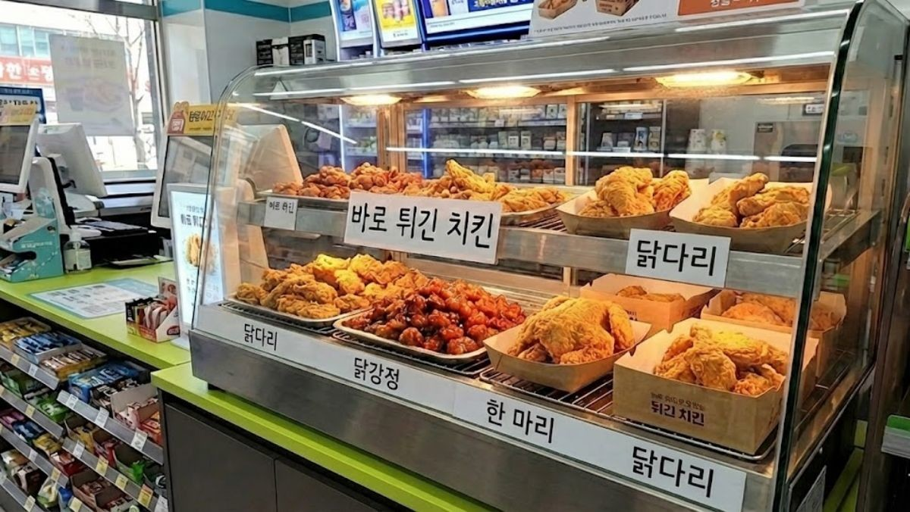

편의점 치킨 + 맥주
숙소에서 가볍게 ‘치맥’ 분위기를 내고 싶을 때 추천합니다. 전자레인지·에어프라이어(가능 시)로 데워 먹습니다.
살 것 (제품명 참고)
편의점 치킨/후라이드/양념치킨 냉장·냉동 상품 · 맥주 또는 무알코올 맥주 · 선택: 치킨무·피클·물티슈
만드는 방법
1. 제품 포장의 조리 방법(전자레인지 시간·와트)을 확인합니다. 냉동은 해동 안내를 따르세요.
2. 데운 뒤 바삭함을 살리려면 뚜껑을 살짝 열고 식히거나, 가능하면 에어프라이어를 짧게 사용합니다.
3. 맥주와 함께 바로 먹습니다. 양념치킨이면 물티슈를 미리 꺼내 두세요.
팁
미성년자는 주류를 구매할 수 없습니다. 숙소에서 냄새·쓰레기 규칙을 지키고, 빈 캔은 분리배출하세요.
숙소에서 가볍게 ‘치맥’ 분위기를 내고 싶을 때 추천합니다. 전자레인지·에어프라이어(가능 시)로 데워 먹습니다.
살 것 (제품명 참고)
편의점 치킨/후라이드/양념치킨 냉장·냉동 상품 · 맥주 또는 무알코올 맥주 · 선택: 치킨무·피클·물티슈
만드는 방법
- 제품 포장의 조리 방법(전자레인지 시간·와트)을 확인합니다. 냉동은 해동 안내를 따르세요.
- 데운 뒤 바삭함을 살리려면 뚜껑을 살짝 열고 식히거나, 가능하면 에어프라이어를 짧게 사용합니다.
- 맥주와 함께 바로 먹습니다. 양념치킨이면 물티슈를 미리 꺼내 두세요.
팁
미성년자는 주류를 구매할 수 없습니다. 숙소에서 냄새·쓰레기 규칙을 지키고, 빈 캔은 분리배출하세요.